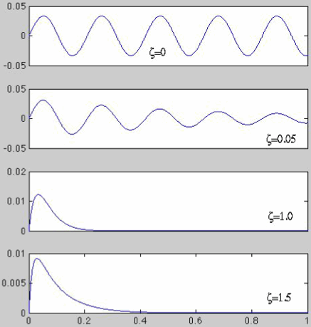
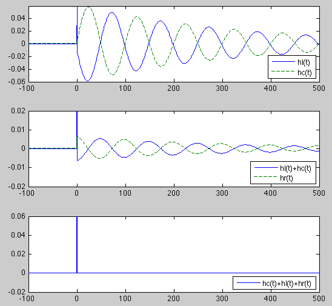
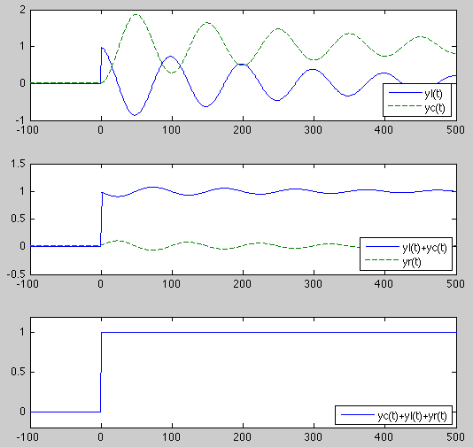
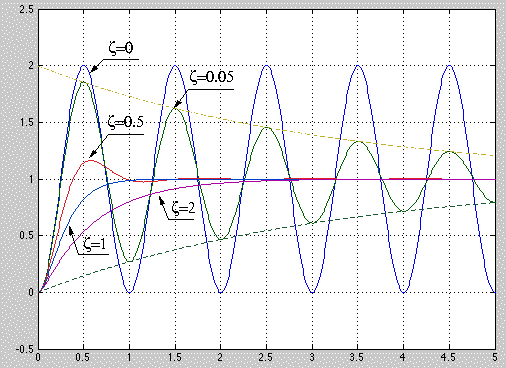

Next: Responses to Impulse Train
Up: Chapter 3: AC Circuit
Previous: AC Circuit Analysis III
Applying KVL to an RCL series circuit we get
where  on the right-hand side is the input voltage. Substituting
on the right-hand side is the input voltage. Substituting
we can rewrite the equation above as a second order ODE in terms of  :
:
We further divide both sides by  to get the canonical form
to get the canonical form
We further define the damping coefficient and natural frequency of the second
order system as
and rewrite the equation above as
To solve the DE, we first find the homogeneous solution by substituting
 into the homogeneous DE and get
into the homogeneous DE and get
Solving the algebraic equation
 we get the
two roots
we get the
two roots
where
The first expression is for  and the second
and the second  .
The two roots
.
The two roots  and
and  can be represented as the root locus on the
complex plane, for a fixed value of
can be represented as the root locus on the
complex plane, for a fixed value of  and a changing value of
and a changing value of
 . For a physical system, such as the RCL circuit,
. For a physical system, such as the RCL circuit,
 .
.

The homogeneous solution takes the following form:
As in the RCL circuit  and
and  , we only need to consider
the root locus in the II and III quadrants in the figure above. The complete
derivation of the homogeneous solution can be found
here.
, we only need to consider
the root locus in the II and III quadrants in the figure above. The complete
derivation of the homogeneous solution can be found
here.
Specifically we consider the following two cases:
 . The system is underdamped.
. The system is underdamped.
where
 is the damped natural frequency.
Correspondingly
is the damped natural frequency.
Correspondingly
is an exponentially decaying sinusoidal oscillation.
In particular, when  ,
,
 , the
system is undamped.
, the
system is undamped.
 . The system is over-damped.
. The system is over-damped.
and the corresponding solution
decays exponentially. In particular, when  , the system is critically
damped.
, the system is critically
damped.

It can be shown that the impulse response of the system is
In particular, when  and ,
and ,

Impulse responses by R, L, and C of an RCL system. Top: impulse responses  (solid curve) and
(solid curve) and  (dashed curve); middle: their sum
(dashed curve); middle: their sum
 (solid curve) and impulse response
(solid curve) and impulse response  (dashed curve); bottom: the sum of
all three:
(dashed curve); bottom: the sum of
all three:
 .
.
The step response of the system can be found
here.
In particular, when , and  , then the general form
of the step response becomes
, then the general form
of the step response becomes

Step responses by R, L as well as C of an RCL system. Top: step responses  (solid curve) and (dashed curve); middle: their sum
(solid curve) and (dashed curve); middle: their sum
 (solid curve) and step responses
(solid curve) and step responses  (dashed curve); bottom: the sum of all
three:
(dashed curve); bottom: the sum of all
three:
 .
.

Step response of second-order system for different  .
Step responses corresponding to five different values of : 0, 0.05, 0.5,
1, and 2. The envelope of the step response for
.
Step responses corresponding to five different values of : 0, 0.05, 0.5,
1, and 2. The envelope of the step response for  is also plotted to
show the exponential decay of the sinusoid.
is also plotted to
show the exponential decay of the sinusoid.
Example
Consider the response  of an undamped 2nd order system (an RCL system
with ).
of an undamped 2nd order system (an RCL system
with ).
- Find the response
 of the RLC circuit to a step input
of the RLC circuit to a step input  .
The general solution is the sum of the homogeneous solution
.
The general solution is the sum of the homogeneous solution
 and the particular solution
and the particular solution  :
:
Consider two different sets of initial conditions:
- Find the system's response to a square impulse
As
 , the response is
, the response is
When  , we have
, we have
We further consider two special cases.
- When
 , we have
, we have
This is a one period of a sinusoid.
- When
 , we have
, we have
This is a pure sinusoid after  .
.
- Find the impulse response
 . The input
. The input  is an impulse which
can be written as
is an impulse which
can be written as
When
 , we have first order approximations
, we have first order approximations
 and
and
 ,
and we get
,
and we get
Substituting this into
 we get the impulse response
we get the impulse response
- It is often desirable for a second order system to reach a set steady
state value without overshoot. This can be achieved by drive the system
by an impulse
 with response
with response
 , followed
by a step
, followed
by a step  with response
with response
The total response is
We see that after reaches the first peak of  at
at  , it will
stay at the constant value as the two responses cancel each other for
, it will
stay at the constant value as the two responses cancel each other for
 .
.
- Alternatively, the steady state value
 can be achieved without
overshoot by applying an input
can be achieved without
overshoot by applying an input
![$x(t)=[u(t)-u(t-T/2)]/2$](img459.png) . The response to
. The response to
 is
is
while the response to  is
is
The overall response is the difference between the two individual responses:
i.e., the response is  for all .
for all .
- It is desirable for a second order system to reach a steady state value
within a time delay
 without overshoot. We first consider
driving the system with a positive square pulse of value
without overshoot. We first consider
driving the system with a positive square pulse of value  followed
by a negative one of
followed
by a negative one of  :
:
The response for  is:
is:
In order for the output to be a constant for , we need to
have the input  for , and set the initial conditions at
for , and set the initial conditions at  to be
to be  and
and
 . To do so, we let
. To do so, we let
Based on the trigonometric identity
 , the equation above
can be written as
, the equation above
can be written as
Substituting this into the desired initial condition , we get
where we have used the trigonometric identities
 and
and
 . Solving this for we get
. Solving this for we get
As now we have the initial conditions and
as
needed. If we set for , so that the output will be at
constant when .
Next: Responses to Impulse Train
Up: Chapter 3: AC Circuit
Previous: AC Circuit Analysis III
Ruye Wang
2014-10-05


![\begin{displaymath}
v_C(t)=\left[ 1-\frac{e^{-\zeta\omega_nt}}{\sqrt{1-\zeta^2}}\sin(\omega_dt+\phi)\right] u(t)
\end{displaymath}](img405.png)
![\begin{displaymath}y(t)=\left[1-\frac{e^{-\zeta\omega_nt}}{\sqrt{1-\zeta^2}}\sin...
...u(t)
=[ 1-\sin(\omega_nt+\pi/2)] u(t)=[1-\cos(\omega_nt)] u(t) \end{displaymath}](img407.png)


![\begin{displaymath}y(t)=\sin(\omega_nt)u(t)+[1-\sin(\omega_nt)]u(t-T/4)
=\left\...
...l} \sin(\omega_nt) & 0<t<T/4 \\
1 & t>T/4\end{array} \right. \end{displaymath}](img454.png)
![\begin{displaymath}y(t)=\left\{\begin{array}{cl}
[1-\cos\omega_nt]/2 & 0<t<T/2 \\ 1 & t>T/2 \end{array} \right.
\end{displaymath}](img464.png)
![\begin{displaymath}x(t)=\left\{\begin{array}{cl}
V & (0<t<t_0/2) \\ (1-a)V & (...
...2<t<t_0)
\end{array}\right. =V \left[u(t)-a u(t-t_0/2)\right] \end{displaymath}](img469.png)
![\begin{displaymath}\frac{dy(t)}{dt}\bigg\vert _{t=t_0}=V\omega_n\left[ \sin(\ome...
...mega_n\left[ \sin(\omega_nt_0)-a\sin(\omega_nt_0/2)\right]=0
\end{displaymath}](img476.png)